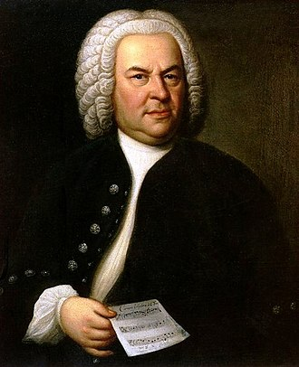

Les œuvres de Bach


- BWV 232 - Messe en si mineur
- BWV 244 - Passion selon saint Matthieu
- BWV 531 - Prélude et fugue en do majeur
- BWV 537 - Fantaisie (prélude) et fugue en do mineur
- BWV 539 - Prélude et fugue en ré mineur
- BWV 541 - Prélude et fugue en sol majeur
- BWV 651 - Komm, Heiliger Geist, Herre Gott en fa majeur
- BWV 818 - Suite en la mineur
- BWV 903a - Fantaisie en ré mineur
- BWV 912 - Toccata en ré majeur
- BWV 968 - Adagio en sol majeur
- BWV 1014 - Sonate en si mineur, pour violon et clavier
- BWV 1035 - Sonate pour flûte traversière et continuo mi majeur
Suites Françaises
- BWV 812 - Suite française no 1 en ré mineur : Allemande, Courante, Sarabande, Menuet I, Menuet II, Gigue
- BWV 813 - Suite française no 2 en ut mineur : Allemande, Courante, Sarabande, Air, Menuet I, Menuet II, Gigue
- BWV 814 - Suite française no 3 en si mineur : Allemande - Courante - Sarabande - Anglaise (ou Gavotte) - Menuet I - Menuet II - Trio - Gigue
- BWV 815 - Suite française no 4 en mi bémol majeur : Allemande, Courante, Sarabande, Gavotte, Air, Menuet, Gigue
- BWV 816 - Suite française no 5 en sol majeur : Allemande, Courante, Sarabande, Gavotte, Bourrée, Loure, Gigue
- BWV 817 - Suite française no 6 en mi majeur : Allemande, Courante, Sarabande, Gavotte, Polonaise, Menuet, Bourrée, Gigue
Autres suites
- BWV 818 - Suite en la mineur : Allemande; Courante, Sarabande simple, Sarabande double, Gigue
- BWV 818a - Suite en la mineur : Prélude, Allemande, Courante, Sarabande, Menuet, Gigue ; seconde version
- BWV 819 - Suite en mi bémol majeur : Allemande, Courante, Sarabande, Bourrée, Menuet I – alternatif Menuet II - Trio
- BWV 819a - Suite en mi bémol majeur : mouvement alternatif : Allemande
- BWV 820 - Ouverture (suite) en fa majeur : [Prélude]; Entrée; Menuet; Trio; Bourrée; Gigue
- BWV 821 - Suite en si bémol majeur : [Praeludium] ; Allemande, Courante, Sarabande, Echo. Allegro
- BWV 822 - Suite en sol mineur : Ouverture, Aria, Gavotte en rondeau, Menuet I, Menuet II, Menuet – Trio, Gigue
- BWV 823 - Suite en fa mineur : Prélude, Sarabande, Gigue ; reste des fragments
Le clavier bien tempérés
1er livre
- BWV 846 - 1er prélude et fugue en do majeurli
- BWV 847 - 2e prélude et fugue en do mineur
- BWV 848 - 3e prélude et fugue en do dièse majeur
- BWV 849 - 4e prélude et fugue en do dièse mineur
- BWV 850 - 5e prélude et fugue en ré majeur
- BWV 851 - 6e prélude et fugue en ré mineur
- BWV 852 - 7e prélude et fugue en mi bémol majeur
- BWV 853 - 8e prélude et fugue en mi bémol mineur (Fugue en ré dièse mineur)
- BWV 854 - 9e prélude et fugue en mi majeur
- BWV 855 - 10e prélude et fugue en mi mineur
- BWV 856 - 11e prélude et fugue en fa majeur
- BWV 857 - 12e prélude et fugue en fa mineur
- BWV 858 - 13e prélude et fugue en fa dièse majeur
- BWV 859 - 14e prélude et fugue en fa dièse mineur
- BWV 860 - 15e prélude et fugue en sol majeur
- BWV 861 - 16e prélude et fugue en sol mineur
- BWV 862 - 17e prélude et fugue en la bémol majeur
- BWV 863 - 18e prélude et fugue en sol dièse mineur
- BWV 864 - 19e prélude et fugue en la majeur
- BWV 865 - 20e prélude et fugue en la mineur
- BWV 866 - 21e prélude et fugue en si bémol majeur
- BWV 867 - 22e prélude et fugue en si bémol mineur
- BWV 868 - 23e prélude et fugue en si majeur
- BWV 869 - 24e prélude et fugue en si mineur
- BWV 846a - Prélude en do majeur - variante de BWV 846
- BWV 855a - Prélude en mi mineur - variante de BWV 855
2e livre
- BWV 870 - 1er prélude et fugue en do majeur
- BWV 871 - 2e prélude et fugue en do mineur
- BWV 872 - 3e prélude et fugue en do dièse majeur
- BWV 873 - 4e prélude et fugue en do dièse mineur
- BWV 874 - 5e prélude et fugue en ré majeur
- BWV 875 - 6e prélude et fugue en ré mineur
- BWV 876 - 7e prélude et fugue en mi bémol majeur
- BWV 877 - 8e prélude et fugue en ré dièse mineur
- BWV 878 - 9e prélude et fugue en mi majeur
- BWV 879 - 10e prélude et fugue en mi mineur
- BWV 880 - 11e prélude et fugue en fa majeur
- BWV 881 - 12e prélude et fugue en fa mineur
- BWV 882 - 13e prélude et fugue en fa dièse majeur
- BWV 883 - 14e prélude et fugue en fa dièse mineur
- BWV 884 - 15e prélude et fugue en sol majeur (Reprise dans la Fugue BWV 902)
- BWV 885 - 16e prélude et fugue en sol mineur
- BWV 886 - 17e prélude et fugue en la bémol majeur (Fugue reprise dans BWV 901)
- BWV 887 - 18e prélude et fugue en sol dièse mineur
- BWV 888 - 19e prélude et fugue en la majeur
- BWV 889 - 20e prélude et fugue en la mineur
- BWV 890 - 21e prélude et fugue en si bémol majeur
- BWV 891 - 22e prélude et fugue en si bémol mineur
- BWV 892 - 23e prélude et fugue en si majeur
- BWV 893 - 24e prélude et fugue en si
- BWV 870a - Prélude et fugue en do majeur - variante de BWV 870
- BWV 870b - Prélude en do majeur - variante de BWV 870
- BWV 872a - Prélude et fugue en do dièse majeur - variante de BWV 872
- BWV 875a - Prélude en ré mineur - variante de BWV 875
Préludes et fugues pour clavierBWV 894 - Prélude et fugue en la mineur. Pièces transformées en triple concerto pour clavecin, flûte traversière et violon, BWV 1044.
- BWV 896 - Prélude et fugue en la majeur
- BWV 900 - Prélude et fughetta en mi mineur
- BWV 901 - Prélude et fughetta en fa majeur
- BWV 902 - Prélude et fughetta en sol majeur
- BWV 902a - Prélude et fughetta en sol majeur
Fantaisies et fugues pour clavierBWV 903 - Fantaisie chromatique et fugue en ré mineur
- BWV 903a - Fantaisie en ré mineur - variante de BWV 903
- BWV 904 - Fantaisie et fugue en la mineur
- BWV 906 - Fantaisie et fugue en do mineur
Toccatas, fantaisies et préludes pour clavier
- BWV 910 - Toccata en fa dièse mineur
- BWV 911 - Toccata en do mineur
- BWV 912 - Toccata en ré majeur
- BWV 912a - Variations en ré majeur sur un mouvement de la Toccata BWV 912
- BWV 913 - Toccata en ré mineur
- BWV 914 - Toccata en mi mineur
- BWV 915 - Toccata en sol mineur
- BWV 916 - Toccata en sol majeur
Sonates en trio pour orgue
- BWV 525 - Sonate en trio numéro I en mi bémol majeur : Allegro, Adagio, Allegro
- BWV 526 - Sonate en trio numéro II en ut mineur : Vivace, Largo, Allegro
- BWV 527 - Sonate en trio numéro III en ré mineur : Andante, Adagio e dolce, Vivace
- BWV 528 - Sonate en trio numéro IV en mi mineur : Adagio, Vivace, Andante, Un poco Allegro
- BWV 528a - Andante, en ré mineur : Variante de l'Andante (3e mouvement) de BWV 528
- BWV 529 - Sonate en trio numéro V en ut majeur : Allegro, Largo, Allegro
- BWV 530 - Sonate en trio numéro VI en sol majeur : Vivace, Lento, Allegro
Les préludes et fugues, toccatas et fugues, fugues, fantaisies pour orgue
- BWV 531 - Prélude et fugue en do majeur
- BWV 532 - Prélude et fugue en ré majeur
- BWV 532a - Fugue en ré majeur ; variation de la Fugue BWV 532
- BWV 533 - Prélude et fugue en mi mineur « petite »
- BWV 533a - Prélude en mi mineur ; variante de BWV 533
- BWV 534 - Prélude et fugue en fa mineur
- BWV 535 - Prélude et fugue en sol mineur
- BWV 535a - Prélude et fugue en sol mineur ; version antérieure simplifiée de BWV 535
- BWV 536 - Prélude et fugue en la majeur
- BWV 536a - Prélude et fugue en la majeur ; variation sur la base du manuscrit original de BWV 536
- BWV 537 - Fantaisie (prélude) et fugue en do mineur
- BWV 538 - Toccata et fugue « Dorienne » en ré mineur
- BWV 539 - Prélude et fugue en ré mineur
- BWV 539a - Fugue en ré mineur ; le deuxième mouvement de la sonate pour violon seul BWV 1001 est une variante de cette fugue
- BWV 540 - Toccata et fugue en fa majeur
- BWV 541 - Prélude et fugue en sol majeur
- BWV 542 - Prélude (Fantaisie) et fugue en sol mineur « Grand »
- BWV 542a - Fugue en sol mineur ; variante de BWV 542 (basé sur manuscrit de Johann Tobias Krebs)
- BWV 543 - Prélude et fugue en la mineur
- BWV 544 - Prélude et fugue en si mineur
- BWV 545 - Prélude et fugue en do majeur
- BWV 545a - Prélude en do majeur ; variante de BWV 545 (basé sur un manuscrit de Johann Nikolaus Forkel)
- BWV 545b - Prélude, Fugue et Trio en si bémol majeur ; autre variante de BWV 545 avec certaines parties peut-être de Johann Tobias Krebs
- BWV 546 - Prélude et fugue en do mineur
- BWV 547 - Prélude et fugue en do majeur
- BWV 548 - Prélude et fugue en mi mineur « Grand »
- BWV 549 - Prélude et fugue en do mineur
- BWV 550 - Prélude et fugue en sol majeur
- BWV 551 - Prélude et fugue en la mineur
- BWV 562 - Fantaisie et fugue en do mineur ; inachevée
- BWV 563 - Fantaisie avec imitation en si mineur
- BWV 564 - Toccata, adagio et fugue en do majeur
- BWV 565 - Toccata et fugue en ré mineur ; une pièce très célèbre, musique de plusieurs films (Fantasia etc.)
- BWV 566 - Toccata et fugue en mi majeur
- BWV 566a - Toccata en do majeur ; première version de BWV 566
- BWV 569 - Prélude en la mineur
- BWV 570 - Fantaisie en do majeur
- BWV 572 - Fantaisie en sol majeur
- BWV 573 - Fantaisie en do majeur ; inachevée, extrait du Petit Livre d'Anna Magdalena Bach
- BWV 574 - Fugue en do mineur ; sur un thème de Giovanni Legrenzi
- BWV 574a - Fugue en do mineur ; variante de BWV 574
- BWV 575 - Fugue en do mineur
- BWV 578 - Fugue en sol mineur
- BWV 579 - Fugue en si mineur ; sur un thème d'Arcangelo Corelli
- BWV 581a - Fugue en sol mineur ; basée sur le premier chœur de la cantate BWV 131
- BWV 582 - Passacaille et fugue en do mineur
- BWV 583 - Trio en ré mineur
- BWV 585 - Trio en do mineur ; basé sur 2 mouvements d'une sonate à 3 de Johann Friedrich Fasch
- BWV 586 - Trio en sol majeur ; transcription d'une sonate à 3 de Georg Philip Telemann
- BWV 587 - Aria en fa majeur ; basé sur L'Impériale de François Couperin, 4e mouvement de Les Nations
- BWV 588 - Canzona en ré mineur
- BWV 589 - Alla breve en ré majeur ; origine douteuse
- BWV 590 - Pastorale en fa majeur
- BWV 1027a - Trio en sol majeur ; arrangement de l'Allegro moderato de la sonate pour viole de gambe et clavecin BWV 1027
Concertos Brandebourgeois
- BWV 1046 - Concerto I (fa majeur)
- BWV 1047 - Concerto II (fa majeur)
- BWV 1048 - Concerto III (sol majeur)
- BWV 1049 - Concerto IV (sol majeur)
- BWV 1050 - Concerto V (ré majeur)
- BWV 1051 - Concerto VI (si bémol majeur)
Suites pour orchestre
- BWV 1066 - 1re suite pour orchestre en do majeur
- BWV 1067 - 2e suite pour orchestre en si mineur
- BWV 1068 - 3e suite pour orchestre en ré majeur (dont 2e mouvement Air)
- BWV 1069 - 4e suite pour orchestre en ré majeur
- BWV 1050 - Concerto V (ré majeur)
- BWV 1071 - Sinfonia en fa majeur - ce BWV n'est plus utilisé, c'est désormais le BWV 1046a : voir Concertos brandebourgeois)
- BWV 900, Prélude et fugue en mi mineur, pour clavier
- BWV 901, Prélude et fugue en fa majeur, pour clavier (reprise de la fugue du no BWV 886)
- BWV 902, Prélude et fugue en sol majeur, pour clavier (variante de la fugue du n° BWV 884 et du Prélude du n° BW V 902a)
- BWV 902a Prélude, en sol majeur, pour clavier, sur la fugue du no BWV 902
- Prélude et fugue en mi bémol majeurBWV 910, Toccata, en fa dièse mineur, pour clavier
- BWV 911, Toccata, en do mineur, pour clavier
- BWV 912, Toccata, en ré majeur, pour clavier
- BWV 912a, Variations, en ré majeur, pour clavier, sur un mouvement de la Toccata BWV 912
- BWV 913, Toccata, en ré mineur, pour clavier
- BWV 914, Toccata, en mi mineur, pour clavier
- BWV 915, Toccata, en sol mineur, pour clavier
- BWV 916, Toccata, en sol majeur, pour clavier
- BWV 917, Fantaisie, en sol mineur, pour clavier
- BWV 918, Fantaisie sur un Rondo, en do mineur, pour clavier
- BWV 919, Fantaisie, en do mineur, pour clavier
- BWV 920, Fantaisie, en sol mineur, pour clavier
- BWV 921, Prélude (Fantaisie), en do mineur, pour clavier
- BWV 922, Prélude (Fantaisie), en la mineur, pour clavier
- BWV 923, Prélude, en si mineur, pour clavier, sur un thème d'Albinoni (voir BWV 951)
- BWV 923a, Prélude, en la mineur, pour clavier (variante du n° BW V 923)